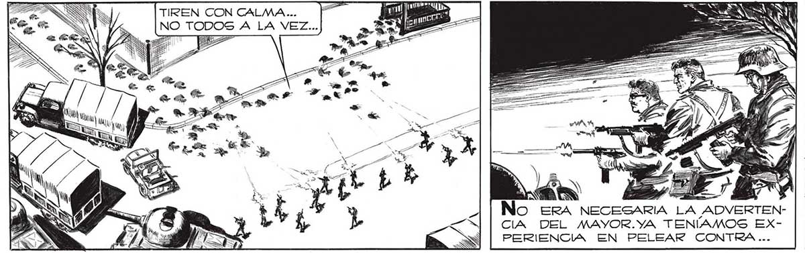
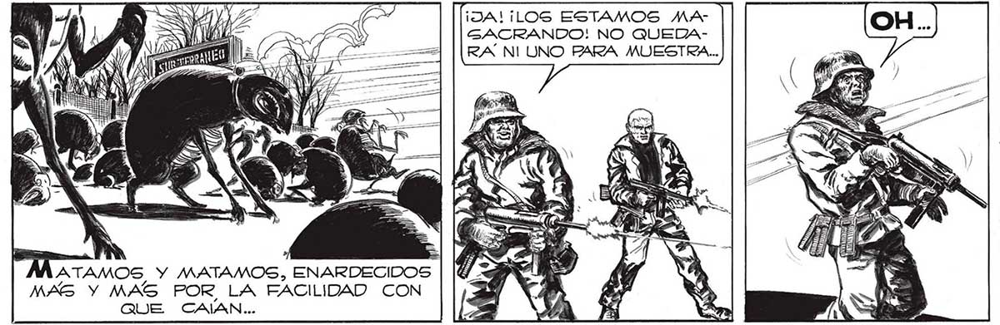

YO HE SIDO UN FRACASO: YO LES CONDUJE A LA TRAMPA, A PESAR DE LAS ADVERTENCIAS EN CONTRA. YO, IDIOTA DE MI, QUE ME AUTOENGAÑEÉ CON LA IDEA DE QUE ELLOS ESTABAN EN PLENA RETIRADA... USTED, PROFESOR, PUEDE TOMAR EL MANDO. O USTED, TENIENTE SALVO. O FRANCO, Sl QUIERE, USTEDES HAN DE MOSTRADO MEJORES CONDICIONES QUE TODOS NO HEMOS HECHO OTRA [COSA QUE EQUIVOCARNOGS DESDE QUE EMPEZO LA INVASION, MAYOR [POR LO TANTO... ¡OTRA VEZ LOS CASCARUDOS! ¡ATENCION 1 ¡ ALLÍ! ERA (NIRO: ACA TIREN CON CALMA... lA E q = NO TODOS A LA VEZ... AN [e 7 Á 4 iZ Ss 1d o a <= hit ¡ No ERA NECESARIA LA ADVERTENCIA DEL MAYOR.YA TENÍAMOS EXPERIENCIA EN PELEAR CONTRA... 6 Mi TN "Y AS pe A .. AQUEL ENEMIGO, Y SABÍAMOS LO VULNERABLE QUE ERA.UNA RABIA SORDA NOS POSEVO... ¡JA! ¡LOS ESTAMOS MA GACRANDO: NO QUEDA¡NOS TOMARON ENRA NI UNO PARA MUESTRA... TRE DOS FUEGOS! IN RANES MES y ÁAÑRATAMOS Y MATAMOS, ENARDECIDO MAS Y MAS POR LA FACILIDAD CON QUE CAJAN... == 11 IMSS, J ES AD, 207

